In this part, I use the ginput function to assign points to both images that i want to morph together. I used a photo of myself and an idol named Wonyoung. In this section only, I call the Delaunay function on the points for each image to get a Delaunay triangulation unique to that photo. These trianguulations are made just for this part -- I will instead be using a Delaunay triangulation of the mean points of both images for part 2.
Three key lessons that caused me to struggle with this problem were that: 1) The images have to be very aligned (looking in the same direction, same angle, same face size, etc), 2) the points have to be labeled in the same order for both images (ex. if point 4 is on my eye, point 4 also has to be on Wonyoung's eye as well, and 3) I need to include the corners of the photos in my point set. Even though both im1 and im2 had the same photo size (ex. 750x900), the face sizes were different (i.e. Wonyoung was zoomed in so her face was bigger), so my morph didn't look that good. To mitigate this issue, I added a border to Wonyoung's photo and shrinked the photo inside the border so that our face sizes would be more similar.
In this part, I create one singular morph -- an image that is exactly halfway between im1 and im2. This can be done with a simple crossblur equation:
(1-t) * im1 + t * im2
Where t is the blur factor, between 0 and 1. In this case, I want a halfway face so I set t to 0.5. A vanilla morph (without any transformations) would look like:
However, this halfway face just looks like two faces overlayed. It doesn't actually transform my face onto a mean face. Therefore, I calculate a mean face and then transform my face onto the mean face. Then, I tranform Wonyoung's face onto the mean face, and crossblur the resulting transformed images using the crossblur equation. Therefore, instead of using individual Delaunays, I take an average of image 1 and image 2's points and average them to create a Delaunay triangulation based on the mean points.
Now I have both my image (image 1)'s points and the mean points, and the mean triangles. For each triangle, I get the relevant points values of that triangle for both my image and the mean image. Mathematically, an affine matrix multiplied by the original points warps the points to the mean points. However, according to the lecture an inverse warp is better, so instead we warp the mean points onto the original points. Then, I average the colors via bilinear interpolation.

Aside: There are a few methods in Ed that all perform bilinear interpolation: griddata, interp2d, regular grid interpolator, etc. Initially I used griddata as the spec suggested, but that gave my photos white streaks, so I used interp2d instead (interp2d has its flaws too though -- it is slower than griddata and also sometimes produces black dots). However, when debugging my griddata function I noticed there are multiple ways to interpolate (other than bilinear). The griddata function offered a few options, so I tried them:
.png)
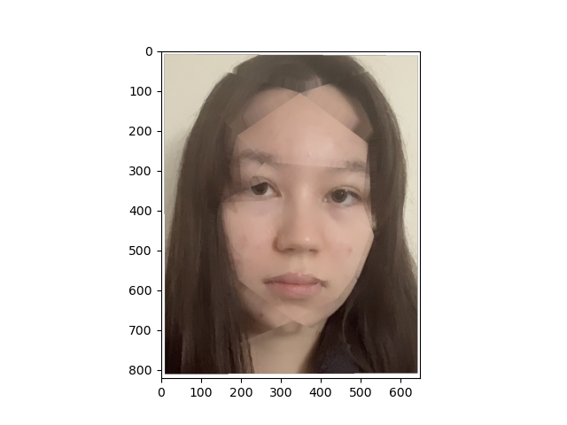
left = spherical interpolation, right = nearest neighbor interpolation
I use the functions from part 2 but adjust the t value (crossblur factor) to make a morph sequence.
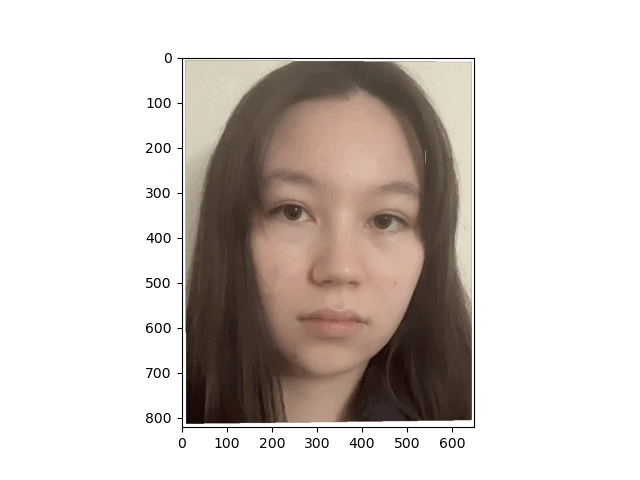
Note: For part 4 and 5, I noticed there were sometimes some black dots in the images. These were coming from the polygon perimeter function, and when removing them the dots went away as well. Therefore, I reran some of the code chunks and replaced my original photos with dots with the non-dot version for photos where the black dots were very bothersome.
For this part, I use the Danes dataset to get photos of Danish women and average them together to create the portrait of an average Danish person. To get the average person, I morphed each image onto the average points (mean of the correspondences). To warp an individual face onto the average face, I use the morph function and set warp to 1 and dissolve to 0.
Note: I accidentally defined my own correspondences instead of using the ones in the asf files. Since I only defined 25 (while I think the asf files had way more than 25), my version of the average face doesn't look as good as a version using the points from the asf files.
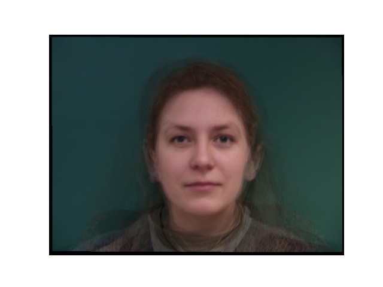
The Average Danish Woman (at least according to my 25 points)

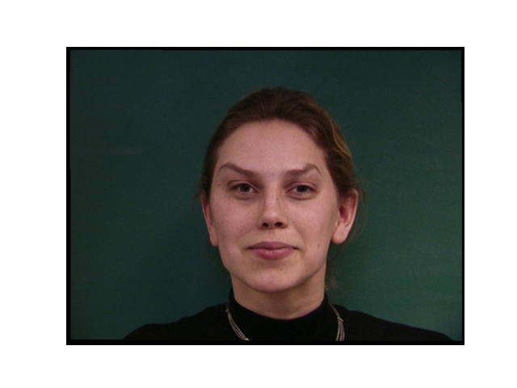
left = a Danish woman, right = morphed to the average Danish face
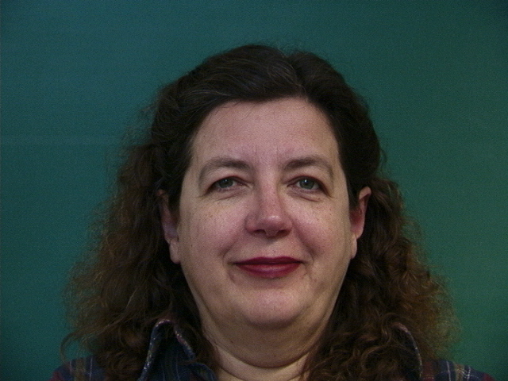
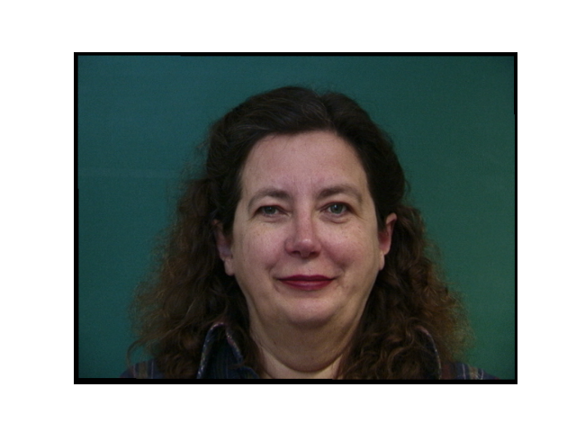
left = another Danish woman, right = morphed to the average Danish face
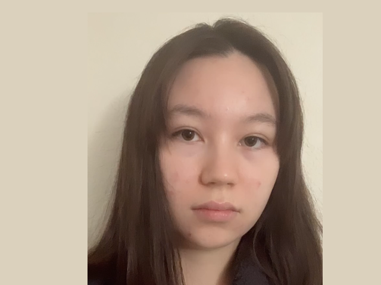
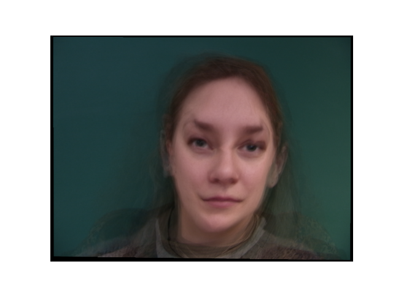
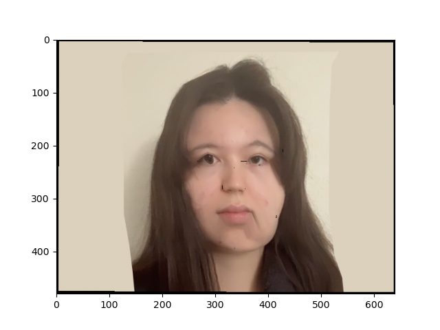
My face morphed onto the average Danish and vice versa.
To make a caricature, I extrapolate my points from the mean. I multiply the subtracted points by an alpha factor. Alpha > 1 represents how much of a caricature I want to have. I tried multiple alpha values:
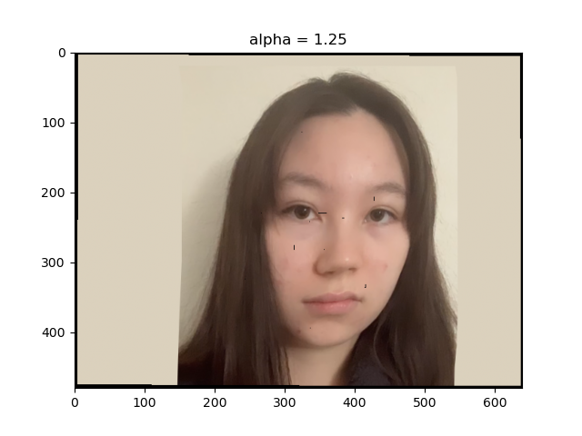

I am a half white American. What would I look like if I was a fully white American?
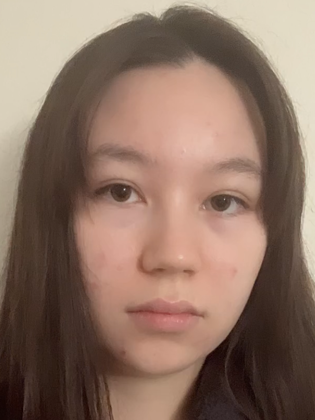
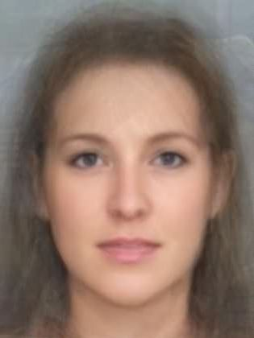
Above is a portrait of the average white woman that I found on the internet.
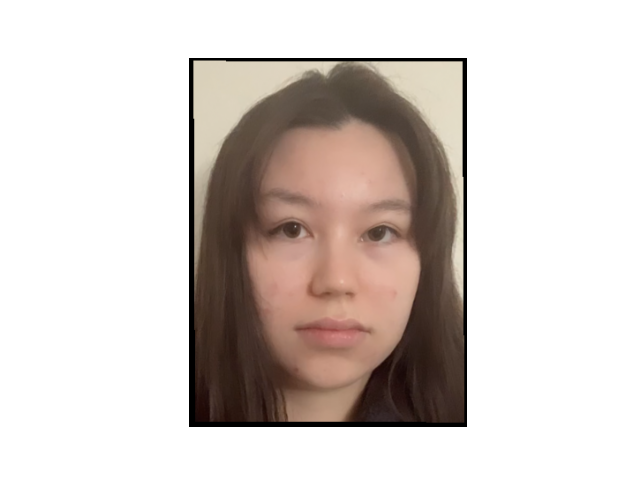
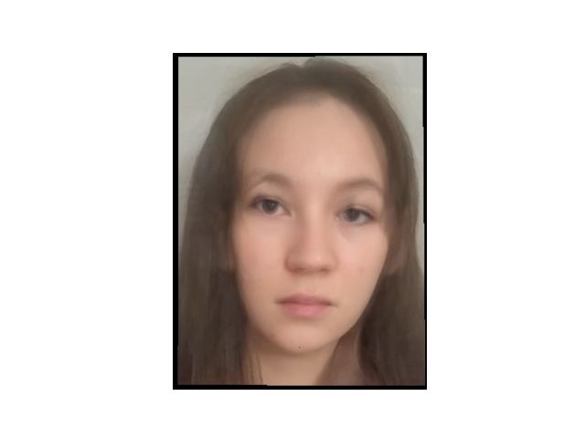
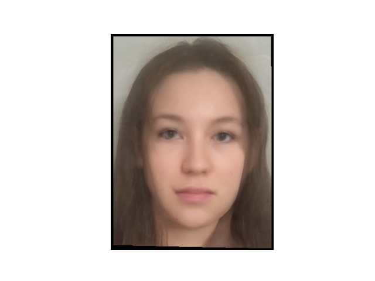
To warp just the shape, I increase just the warp factor. To warp the colors, I increase just the dissolve factor. To get the true morph, I set both factors to the same value. Left to right: 0.5 warp, 0.5 dissolve, 0.5 both
In this project I played around with faces. One key takeaway is that face morphing doesn't use some fancy technology like neural networks or ML algorithms -- in fact, it is just linear algebra. I also learned that in order for face morphing to work well, I need two images that are aligned or else it doesn't work that well.